Wavelength Calibration¶
The wacecalibration procedure in the software is by far the most complex and abstract part of the pipeline. In order to utilize the spacial information obtained by a long-slit spectrograph, the software needs to account for both spectral and spacial features in the wavelength calibration. This complicates the code and the user interface, but it is deemed necessary in order to achieve the needed precision for a long-slit observation.
Quick start¶
The wavelength calibration routine is executed by the following call:
pylongslit_wavecalib PATH_TO_CONFIG_FILE
The routine will produce a large amount of quality assesment plots, and will
write 4 files to the output directory:
good_lines.pkl, reidentified_lines.pkl, wavelen_fit.pkl, wavelength_map.fits.
The meaning of the plots and the files will be explained in the following sections.
Since the wavelength calibration is a complex process, the quality assesment plots and the parameters will be explained together in the following sections, as this might help to unsertand how the parameters effect the quality of the calibration.
There are 2 major steps in te routine: line reidentification and tilt tracing.
Line reidentification¶
In this step, the centers of the manually identified lines from the previous step are refined using generalized Gaussian fits. The refined line centers are then used to fit a polynomial to the pixel vs. wavelength relation - this polynomial is called the 1d wavelength solution. It will later, together with the tilt estimation, be used to map every pixel in the detector to a wavelength.
Firstly, the reidentification step will plot the gaussian fits of the lines, as shown in the following figure from the SDSS_J213510+2728 tutorial dataset:
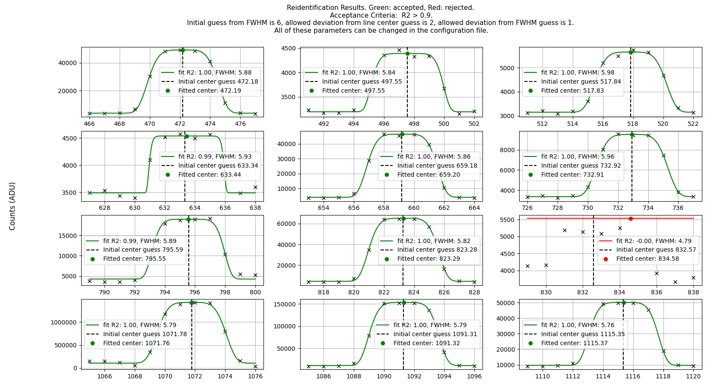{kind=link}
Zoomed in on one line:
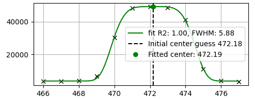{kind=link}
If you see good fits being rejected, bad fits being accepted, or the fits
simply failing (some are expected to fail, but not the majority), you can
try tweaking these "wavecalib" parameters:
"offset_middle_cut": The 1d line spectrum is taken from the middle of the image.
Sometimes, the middle of the image is not the best place,
so the offset_middle_cut parameter can be used to offset the cut from the middle
by a certain amount of pixels
"pixel_cut_extension": this parameter is used to decide how many detector rows to use for the
1d-spectrum cut. If pixel_cut_extension is set to 0, only one row will be used. If it is set to 2,
the middle row +/- 2 rows will be used and then averaged and so forth. This is useful if the arc line spectrum
is noisy, as averaging removes some of the noise. However, the cut should not be wider than necessery, as the line centers change gradually
in the spatial direction.
"FWHM": the initial guess for the FWHM of the lines.
"TOL_FWHM": the tolerence for deviation the fitted FWHM may have from
the initial guess.
"TOL_MEAN": the tolerence for deviation the fitted center may have from
the manually identified center.
"REIDENTIFY_R2_TOL": the tolerance for the \(R^2\) value of the fit. If the \(R^2\) value is below this value, the fit is rejected.
After the lines has been reidentified, the 1d wavelength solution is fitted to the reidentified lines. An example of the 1d wavelength solution is shown in the following figure:
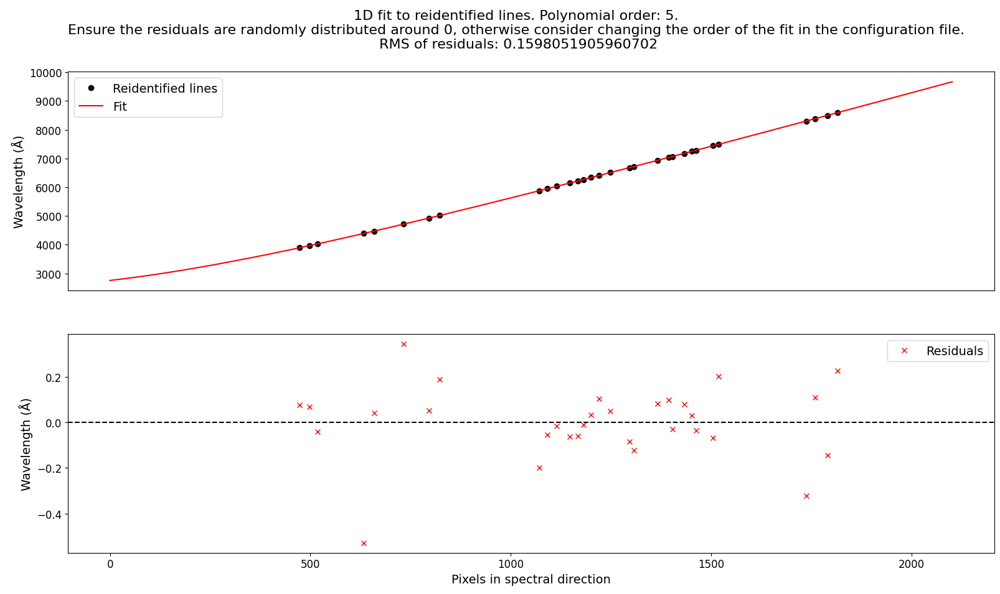{kind=link}
You should try to get a good fit with random residuals with the lowest possible degree of the polynomial.
The parameter that sets the degree is "ORDER_WAVELEN_1D". Be aware that if the lines have been reidentified
with errors (e.g. too relaxed \(R^2\) tolerance), that it might also affect the 1d wavelength solution.
Tilt tracing¶
The arc lines can have a tilt in the spatial direction. This is very prominent when inspecting the master arc from the GQ1218+5709 tutorial dataset:
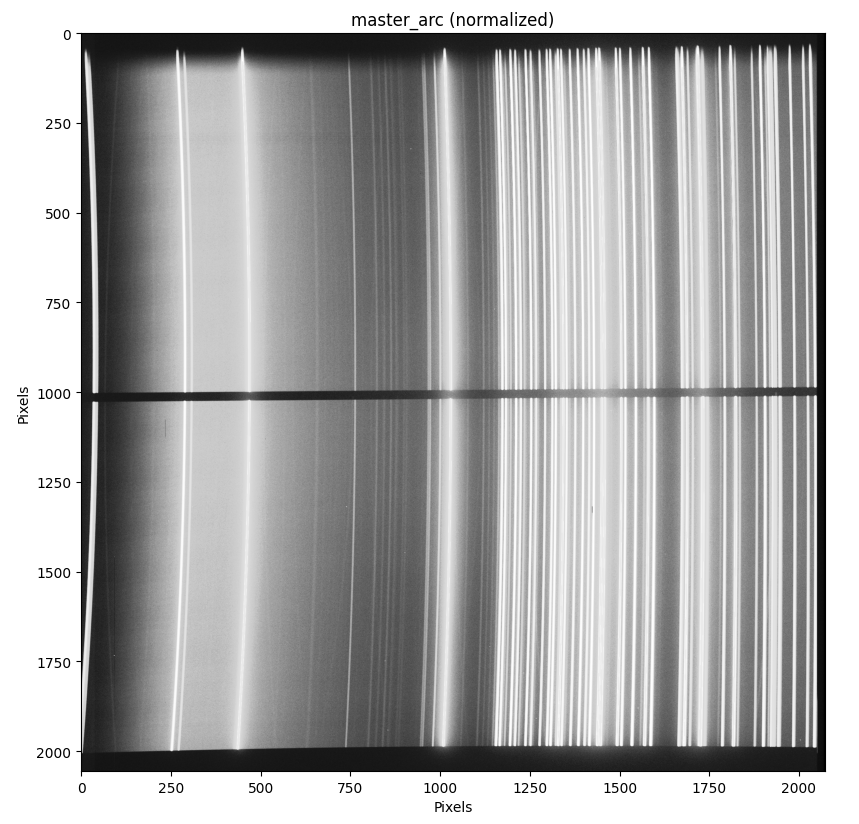{kind=link}
As the wavelengt is constant along every arc line, we need to estimate the tilt through whole of the detector in order to map the 1d wavelength solution to the 2d detector.
Firstly, the tilt tracing algorithm esttimates the position of every line on the detector. This is done the same way as in the line reidentification, but now the fit is not done for one center, but through the whole spacial direction, as shown below:
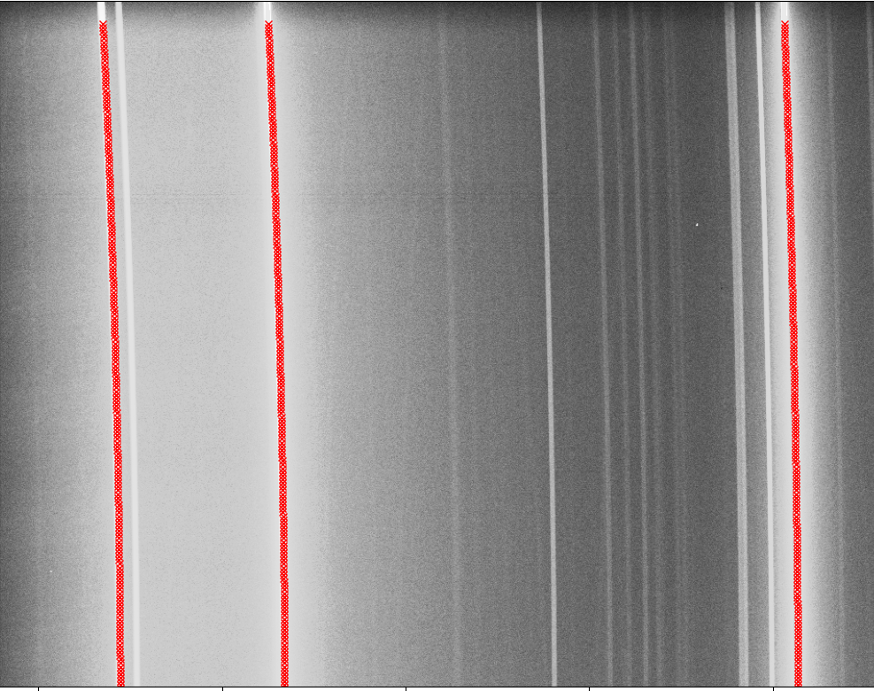{kind=link}
When the tracing is done, the spacial coordinate at where the 1d wavelength solution was evaluated is set to have tilt = 0. The tilt of every line is estimated based on how much a given spacial pixel deviates from the tilt = 0 spacial coordinate. The tilt is then fitted with a polynomial for every line. The tilt fit for every line is plotted together with residuals for quality assesment, as shown here from the GQ1218+5709 tutorial dataset:
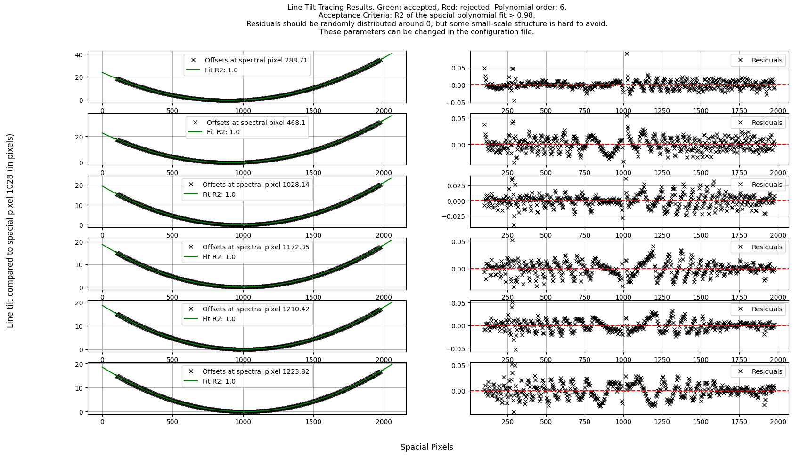{kind=link}
Zoom in on one line:
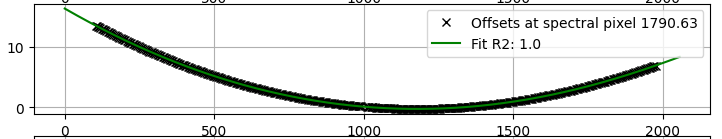 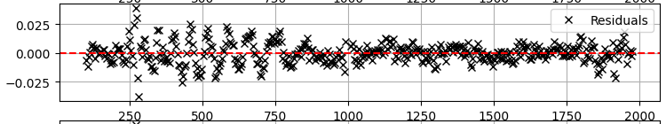{kind=link}
{kind=link}
The tilt in this example is estimated with tilt = 0 set at the spacial pixel 1028. The residuals show structure in the magnitude of 0.01 pixel. From experience, this is hard to avoid, and should not have a large impact on the final wavelength when the magnitude is this low.
Several parameters can be set if the individual line tilt estimation is accepting bad fits, rejectng good fits, identifying lines in the wrong place or alike.
For the individual center tracing through the spacial direction, the same parameters
apply as in line reidentification. The only difference
is that the \(R^2\) threshold for the individual Gaussian fits is set by the
"TILT_TRACE_R2_TOL" parameter. In experience, the \(R^2\) value can be
set lower than in the "REIDENTIFY_R2_TOL" parameter, as the tilt tracing is
lastly estimated by a polynomial fit, so a few outliers are okay.
The parameter "TILT_REJECT_LINE_FRACTION" is used to abort a line trace if the
fraction of rejected fits is above this value. This optimizes the computational time
and assures that badly identified lines do not get accepted as false postives.
The parameter "jump_tolerance" is used to set the maximum jump in pixels a line can
have from one estimated center to another. This can help identify lines that are close
to each other.
The order of the polynomial tilt for individual line tilts is set by the
"ORDER_SPATIAL_TILT" parameter. The \(R^2\) threshold for fit rejection
is set by the "SPACIAL_R2_TOL" parameter.
When the individual lines are identified, the line traces are plotted for quality assesment:
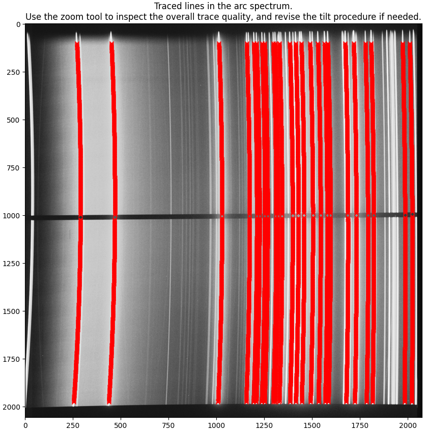{kind=link}
Inspect if the lines are traced correctly, specially that traces do not jump between neighboring lines.
Lastly, the estimated tilts throughout the detector are used to perform
a 2d tilt polynomial fit with the spacial order "ORDER_SPATIAL_TILT" and the
spectral order "ORDER_SPECTRAL_TILT". The residuals are plottet along both
the spacial and spectral direction for quality assesment:
{kind=link}
In spacial direction the residuals should be random, but very small scale structure (order of 0.01 pixel) is hard to avoid. In the spectral direction, the residuals will be collected in columns where the arc lines are placed. The residuals here should also be dispersed around 0.
The individual lines are then plotted next to the 2d fit evaluated at the same pixels as the individual lines:
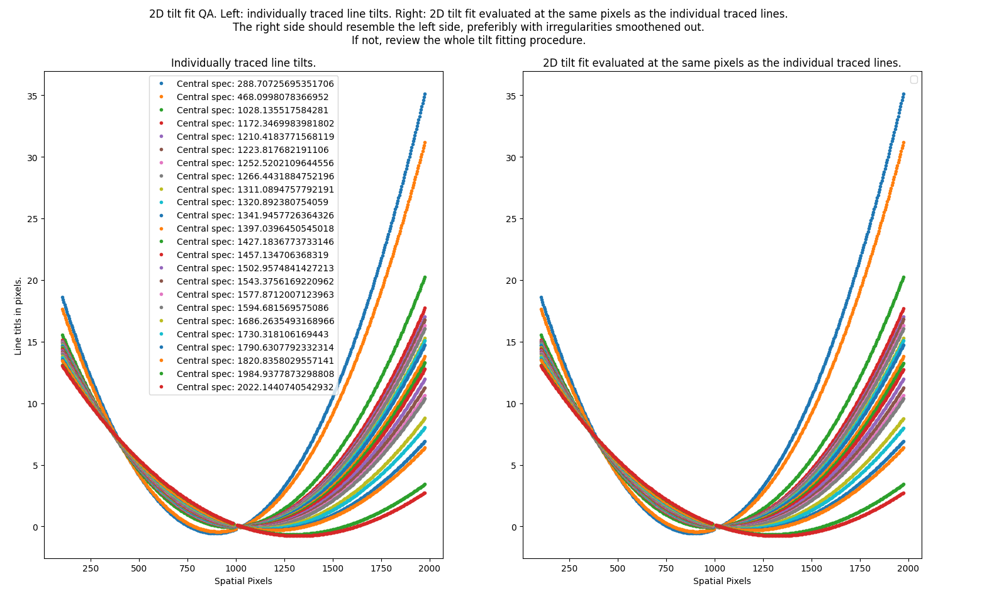{kind=link}
The plots should resemble each other greatly, with the lines at the plot to the right showing smoother structure. If this is not the case, you will need to revise the whole tilt fitting procedure.
At this point, all the fitting and calculations are done.
The tilt detector map and the wavelength map is produced as a last sanity-check. You should see a smooth continuum in both. Also, check that the wavelength range is as expected for your instrument, filter and disperser combination:
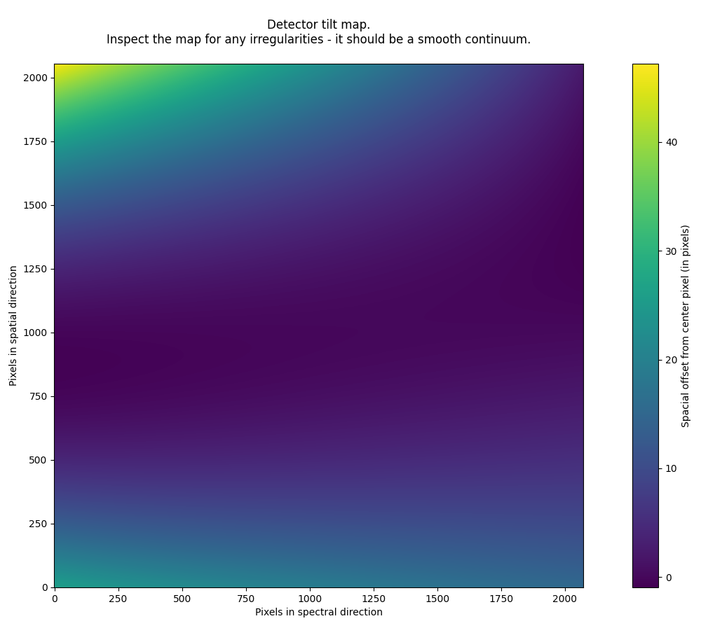 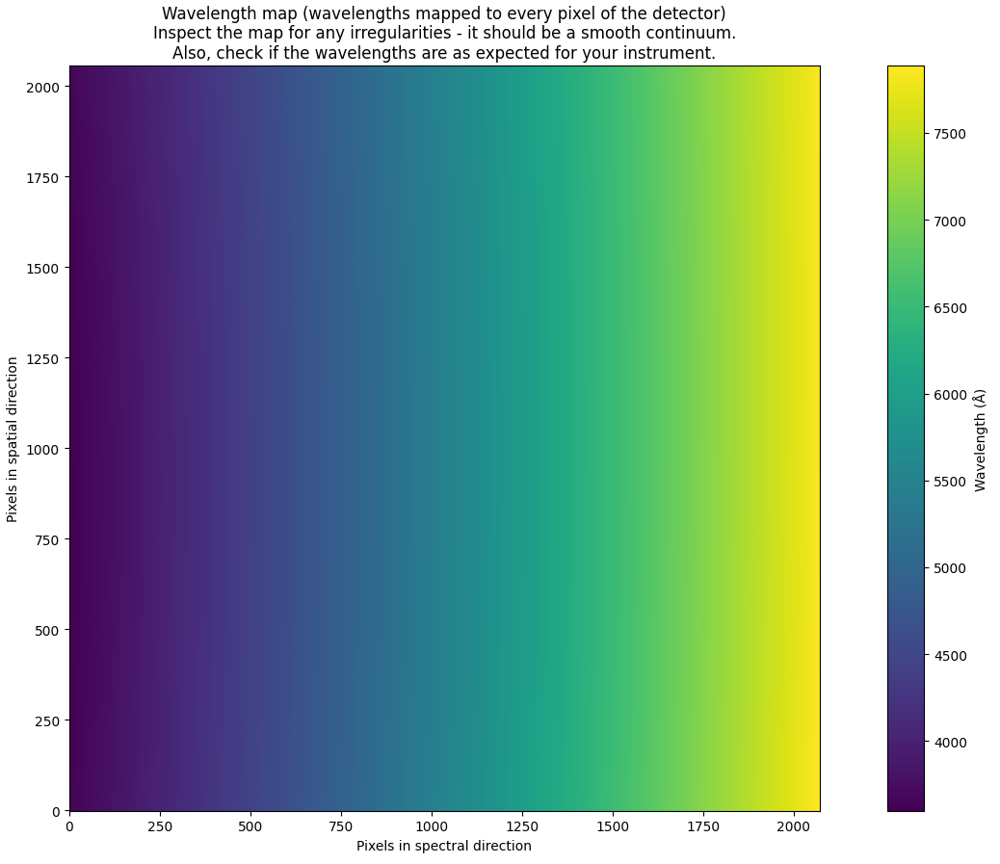{kind=link}
{kind=link}
Reusing past products in the wavelength calibration¶
When adjusting the many parameters in this procedure, it is sometimes useful to reuse some of the products and for example jump straight to the tilt tracing if the line reidentification is already working correctly.
The parameters fir this are (all can be set to either true or false):abbr:
"wavecalib": {
"reuse_reided_lines": # loads the file reidentified_lines.pkl from the output directory, this file holds the reidentified line centers
"reuse_1d_sol": # loads the file wavelen_fit.pkl from the output directory, this file holds the 1d wavelength solution
"reuse_line_traces": # loads the file good_lines.pkl from the output directory, this file holds the individual line traces
"reuse_2d_tilt_fit": # loads the file tilt_fit.pkl from the output directory, this file holds the 2d tilt fit
}
How the wavelength solution gets evaluated¶
It can be conceptually hard to understand how the wavelengths get mapped to the detector pixels with the abstract procedure described above. The below explanation is an attempt to clarify this.
For the spacial pixel \(y_{0}\) at which the 1d wavelength solution \(f\) is known, the wavelength \(\lambda\) can be decided by \(\lambda = f(x_{0})\), where \(x_{0}\) is the spectral pixel. For any other pixel \((x,y)\), we know the tilt \(\Delta x\) that transforms \(x\) to \(x_{0}\) while keeping the wavelength constant. We evaluate the wavelength at pixel \((x,y)\) by \(\lambda = f(x - \Delta x)\):
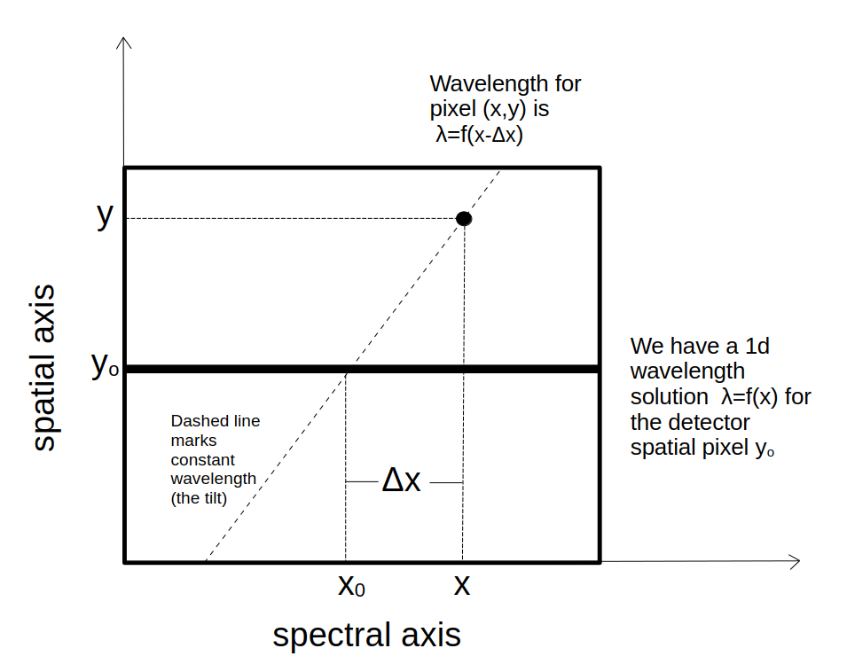{kind=link}